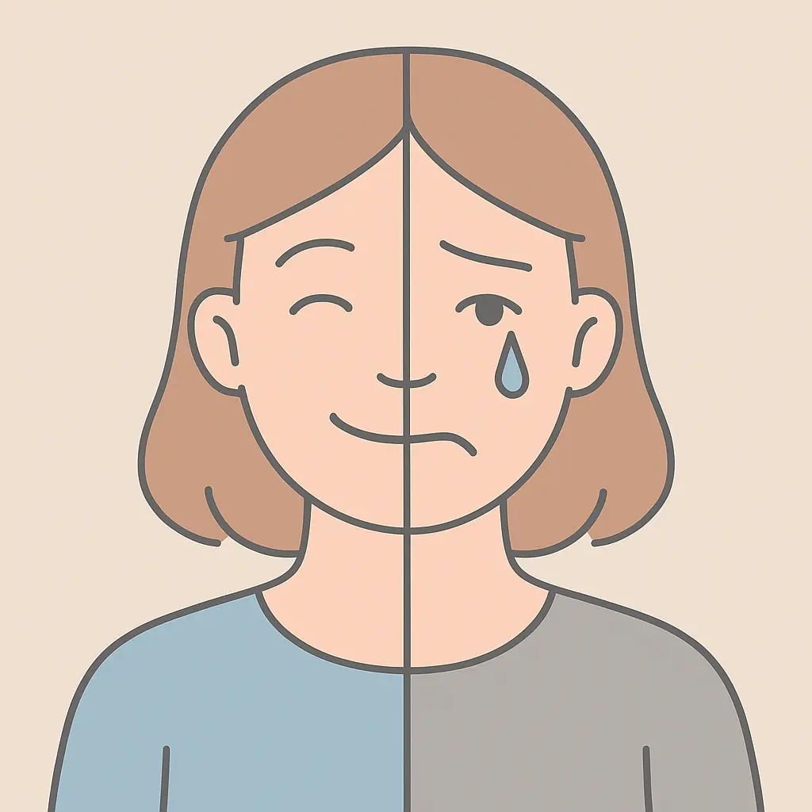
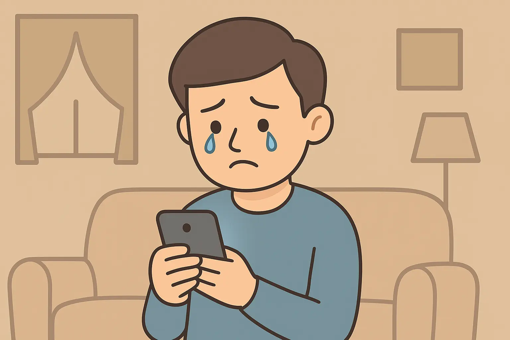
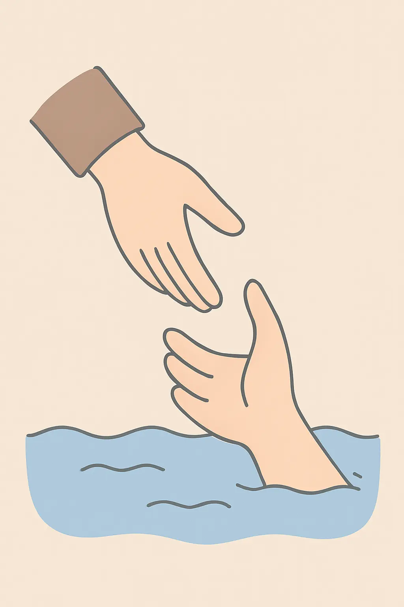

Nærkontakt
Kan du ikke stoppe med at græde. her er 3 strategier til at stoppe følelsesstormen
Et trygt rum for store tanker og stærke følelser
Kan du ikke stoppe med at græde. her er 3 strategier til at stoppe følelsesstormen
Tilmeld dig her og bliv kontaktet af en og snak om dine følelser
Når unge smiler udadtil, men kæmper indeni
De smiler i skolegården, tager billeder til sociale medier og siger, at de har det “fint”. Men bag de rolige svar gemmer sig en voksende stilhed: alt for mange unge føler sig kede af det, stressede eller tomme uden helt at vide hvorfor.
Ifølge nyere undersøgelser rapporterer flere unge end nogensinde før, at de kæmper med tristhed, ensomhed og pres. Ikke fordi de nødvendigvis mangler noget konkret – men fordi verden omkring dem er blevet svær at navigere i.
Et konstant pres på at være “på”
Unge vokser op i en tid, hvor sammenligning aldrig stopper. Sociale medier bombarderer dem med billeder af andres perfekte liv, succes og smil. Samtidig mærker mange et pres for at præstere – i skolen, i sociale relationer, i udseende og fremtidsplaner. Resultatet? En generation, der føler, de skal være noget hele tiden – og at det aldrig er helt nok.
Når sorgen ikke har et navn
Mange unge beskriver, at de er kede af det “uden grund”. Det er ikke nødvendigvis en depression – men en følelsesmæssig overbelastning. De lever i et tempo, hvor der sjældent er plads til at mærke sig selv. Følelser bliver skubbet væk, og til sidst melder kroppen sig – med træthed, tårer eller en tung følelse af meningsløshed. Derfor er det vigtigt, at voksne omkring unge tør tage tristheden alvorligt – også når den ikke giver mening. Nogle gange har unge ikke brug for løsninger, men for nogen der lytter og siger: “Det giver mening, at du har det sådan.”
Små skridt mod håb
Der er heldigvis meget, der kan hjælpe: at tale åbent om følelser, skrue ned for sammenligning, få frisk luft, bevæge sig, og opsøge fællesskaber, hvor man kan være sig selv. At være ked af det betyder ikke, at man er svag – det betyder, at man har brug for at blive mødt med ro og forståelse.
Et stille håb
Bag tallene og tårerne findes en generation, der tør mærke efter – og det er i sig selv et håbstegn. For når unge tør vise, hvordan de virkelig har det, kan vi sammen begynde at skabe en verden, hvor ingen skal gemme deres tristhed bag et smil. “Du behøver ikke have en grund for at have det svært. Du behøver bare nogen, der vil forstå det.”
Dine følelser har fået en platform
Livet er rodet. Det larmer. Det vælter ind. Og når dine tårer ikke vil stoppe, føles det som en slags nødsituation. I dag ser vi det overalt: mennesker, der græder på TikTok. Story-time-videoer, hvor nogen siger: “Og så begyndte jeg bare at græde …” De får millioner af visninger. Du scroller, genkender følelsen og tænker: “Det kunne være mig.”
Hvorfor vi bliver fanget af græde-storytimen
Når nogen deler et sammenbrud på video, føles det ægte. Vi bliver draget af sårbarheden — et ansigt, en stemme, tårer. Formatet giver tilladelse: “Det er okay at have det sådan.” For nogle bliver det at filme sine tårer en måde at bearbejde følelser højt på — eller at blive set og bekræftet af andre.
Men hvad hvis tårerne ikke stopper?
Hvis du mærker, at din følelsesmæssige grænse for længst er overskredet — måske græder du flere gange om ugen, måske vågner du allerede tung om morgenen — så er det ikke en “trend”. Det er din virkelighed. Du lever ikke bare en story-time. Du lever i den. Og ofte bliver det et loop: overvældelse → tårer → deling (eller lysten til det) → lettelse → nye tårer. Et loop, der holder dig fast i gråden i stedet for at føre dig ud af den.
Hvad det sociale gråd-trigger kan gøre
Hvad du kan gøre, når gråden fortsætter
Sådan finder du fodfæste, når alt vælter
Der er tidspunkter, hvor tårerne bare ikke stopper. Uanset hvor meget du forsøger at tage dig sammen, så bliver alt for meget. Måske føler du dig tom, udmattet eller skamfuld over at reagere så voldsomt – men der er intet svagt i at græde. Tværtimod er det kroppens måde at fortælle dig, at du har brug for omsorg.
Tårer er et signal – ikke et nederlag
Crying er en naturlig reaktion, når følelserne overstiger det, vi kan rumme. Kroppen bruger tårer til at frigive stresshormoner og skabe lettelse. Men hvis gråden bliver ved, kan det være et tegn på, at noget dybere er på spil – som stress, angst, depression eller gammel sorg, du ikke har fået bearbejdet.
Et simpelt billede at huske: gråden er som et tryk på en sikkerhedsventil. Den slipper noget ud, men den fortæller også, at der er for meget pres inden i. Når gråden tager over Hvis du græder næsten hver dag, uden at vide hvorfor, eller det går ud over din søvn, dit arbejde eller dine relationer, er det vigtigt at række ud. Det kan være til en læge, terapeut eller en person, du stoler på.
Du behøver ikke have “en god grund” for at få hjælp. Gråden er grunden – den viser, at du har brug for støtte.
Små skridt, når du ikke kan stoppe med at græde Når tårerne kommer, kan du prøve at:
Det kan føles som om, du går i stykker, men ofte er gråden et tegn på, at noget i dig prøver at hele. Tårerne peger ikke mod svaghed, men mod behovet for ro, forståelse og kærlighed – både fra dig selv og andre.
Lad gråden være begyndelsen på at forstå dig selv bedre. Du er ikke alene, du er ikke forkert – du er menneske.